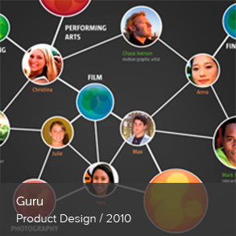
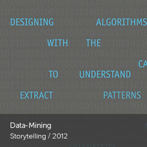
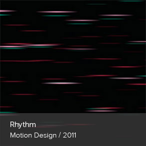
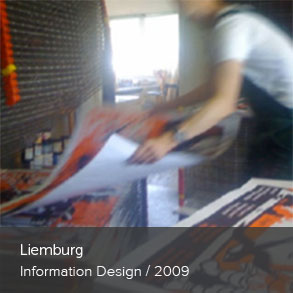
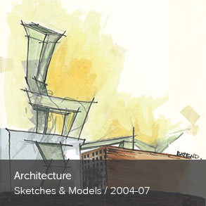

Build empathy first;
ask lots of questions and seek to understand why. Then, you can design

Projects

- 
- 
- 
- 
- 
Process
-
1
explore
use ethnographic research to understand peoples’ pain points and latent unmet needs
-
2
ideate
generate many solutions that address the pain points and latent unmet needs
-
3
prototype
build lo-fi prototypes of the ideated concepts; get feedback from people to see what resonates
-
4
test & evaluate
test and refine at a higher fidelity as the concept is validated with the people experiencing pain points
-
5
execute
build a fully functioning and scalable prototype; continue to test, refine, and validate over time
Hi, I'm Sarah
download resumé
I’m a UX designer, human-centered researcher, former architect, and aspirational spring-roll maker. I am most happy when things are in order and make sense. My yellow lab puts the world into perspective for me and I live for warm sunny days, spirulina smoothies, Ashtanga Yoga, and trips to Southern California.
I’m never really satisfied with the current state; as most things have an opportunity to be better, more efficient, and more person-centric. Whether you’re looking to go out into the world to understand what people really care about, translate persona insights into value propositions, or build wireframes around scenarios that tell a real story, I’m your lady.
I currently work for Capital One Labs in the Washington DC area. I’m helping rethink the way people interact with their money while also helping infuse Design Thinking methodologies into Capital One’s overall product development process. I really love what I do.